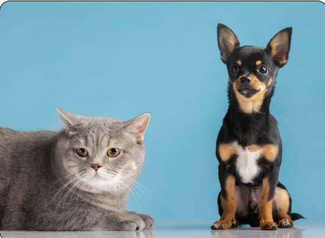
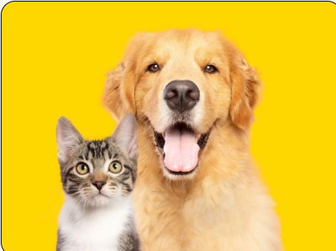
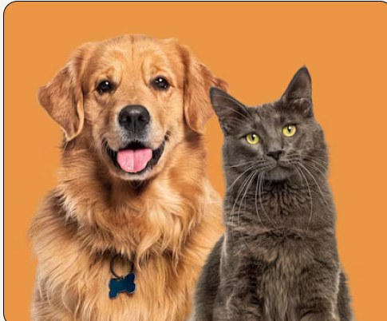

A Maneira Mais Segura De Conhecer, Adotar e Amar Seu Futuro Companheiro
Junte-se a milhares de famílias que encontraram seu companheiro perfeito, através do AmparaPet, juntos fazemos corações se encherem de alegria



Encontre e adote seu animal de estimação em 4 etapas
- 01
Encontre um animal
Explore os animais disponíveis e escolha aquele que mais combina com você e sua família.
- 02
Demonstre interesse
Entre em contato pelo WhatsApp para demonstrar seu interesse em adotar o animal escolhido.
- 03
Aguarde o contato
O responsável pelo abrigo entrará em contato para conversar sobre a adoção e orientar os próximos passos.
- 04
Dê um novo lar
Com tudo aprovado, siga as orientações e prepare-se para receber seu novo companheiro!